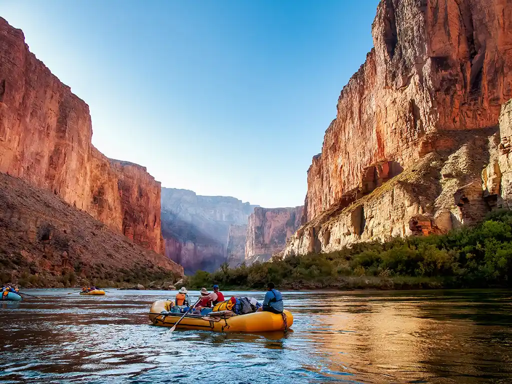
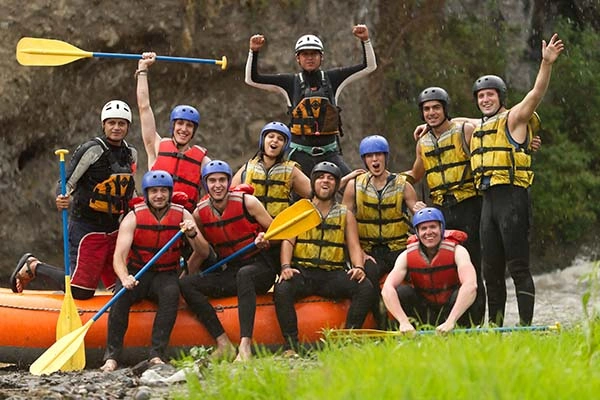

White water rafting is one of the most exhilarating outdoor
experiences, offering both heart-pumping excitement and a chance to
explore some of the most scenic waterways in the world. Whether
you're a seasoned rafter or a beginner, this sport can be enjoyed at
varying levels of intensity and difficulty. Here is everything you
need to know about white water rafting.
White water
rafting can be enjoyed all over the world, with some rivers gaining
international fame for their challenging rapids and scenic beauty.


Victoria Falls White Water Rafting
History
White water rafting has its origins in early river navigation, where ancient civilizations and indigenous peoples used simple rafts and boats for transportation, trade, and exploration. The first true rafting expeditions began in the 19th century, with John Wesley Powell’s groundbreaking 1869 journey down the Colorado River through the Grand Canyon, marking one of the earliest instances of navigating dangerous rapids. This laid the foundation for future river exploration, though rafting remained primarily a means of survival and transportation until the 20th century.

In the 1960s and 1970s, white water rafting evolved into a recreational sport as inflatable rubber rafts became more widely available. This period saw the rise of commercial rafting companies offering guided trips, making the sport accessible to a wider audience. By the 1980s and 1990s, rafting had expanded globally, with rivers in regions like Africa, South America, and Canada becoming popular destinations for adventure tourism. Today, white water rafting is a mainstream outdoor activity enjoyed by millions of people worldwide, with modern safety measures and eco-tourism initiatives contributing to its growth and popularity.
Adventure Awaits You!